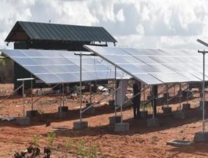

Kenya's energy transition demands a portfolio approach. We combine deep technical expertise with local knowledge to select, design, and deliver the right technology mix for every project - from solar and wind to hydropower.
At Ecotrunk, we believe no single technology holds all the answers. Every site, community, and investment profile demands a tailored solution. Our team combines rigorous technical analysis with deep local knowledge to recommend, design, and deliver the optimal technology pathway - whether solar, wind, hydropower, or a hybrid combination.
Photovoltaic systems converting Kenya's exceptional insolation into electricity - from commercial rooftops to utility-scale farms, with battery storage integration for firm, dispatchable power.
Explore SolarCapturing the power of Kenya's world-class wind corridors in Turkana, Ngong Hills, and beyond. Full lifecycle services from resource assessment to turbine selection and grid integration.
Explore WindLeveraging Kenya's rivers for clean, dispatchable baseload power. Run-of-river schemes, small hydro for rural electrification, and climate-resilient dam rehabilitation projects.
Explore HydropowerEach technology is selected, designed, and delivered through a rigorous process tailored to Kenya's unique conditions, resources, and regulatory environment.
Module prices have fallen over 90 percent since 2010. Modern monocrystalline panels achieve 21-23% efficiency, up from 15% a decade ago. Bifacial modules capturing light on both sides boost yield by 5-15%. Microinverters and power optimisers maximise harvest from each panel, critical for partially shaded installations common in urban rooftop environments.
Battery costs have fallen by over 80 percent since 2015 to under USD 150 per kWh. LFP chemistry is now preferred for stationary storage with 6,000+ cycle life. Solar-plus-storage systems deliver firm, dispatchable power through evening peaks, stabilise voltage, and provide backup during Kenya's frequent grid outages.
C&I users achieve 3-5 year paybacks at current module prices. The Rift Valley's 5.5-6.5 kWh/m2/day insolation is among the world's best. Feed-in tariffs and international climate finance are driving utility-scale pipeline growth. The off-grid market serves 25 percent of Kenyans through PAYG mini-grids.
Reducing operational energy costs for businesses, factories, and office complexes across Kenya's urban centres with minimal land use.
Ground-mounted PV from 1 MW to 50 MW connected via PPAs, with full EPC and project financing support for developers.
Decentralised solar for rural communities, schools, and health facilities beyond grid reach with smart metering and mobile payments.
Powering irrigation, cold storage, and agro-processing across arid regions, replacing diesel pumps at 90 percent operating cost reduction.
Modern onshore turbines range from 1.5 MW to 6 MW with hub heights of 80-140 metres and rotor diameters exceeding 150 metres. Direct-drive permanent magnet generators eliminate the gearbox - historically the most failure-prone component - improving reliability. Advanced blade aerodynamics with serrated trailing edges boost energy capture by 20-30 percent over earlier designs.
The Turkana Corridor's channeled winds average 11-13 m/s during peak season - among the world's strongest. The Ngong Hills demonstrate ridge-top viability near Nairobi. Our resource assessment uses meteorological masts and SODAR units collecting 12+ months of site data before turbine selection and micrositing.
Integrating variable wind into Kenya's hydro/geothermal grid requires sophisticated forecasting, dispatch scheduling, and curtailment protocols. Modern wind farms provide reactive power, frequency response, and fault ride-through compliant with Kenya's Grid Code. Community benefits include roads, schools, and employment through development agreements.
End-to-end delivery from wind resource assessment and turbine selection through construction, commissioning, and grid connection.
Upgrading existing wind farms with modern, higher-capacity turbines and advanced control systems to improve energy capture and extend operational life.
Combining complementary wind and solar profiles to smooth generation, improve capacity factors, and share grid connection infrastructure.
Comprehensive meteorological monitoring, energy yield assessment, and financial modelling to de-risk investment decisions before capital commitment.
Pelton turbines excel in high-head, low-flow mountain catchments at over 90 percent efficiency. Francis turbines handle medium head and flow ranges as the global standard. Kaplan's adjustable blades suit low-head, high-flow river applications. CFD modelling optimises turbine selection and intake design for each site's unique hydrology.
The Tana River's Seven Forks cascade delivers 500+ MW through five plants. The Athi system and rivers draining the Aberdares and Mt Kenya add significant capacity. Run-of-river projects on Sondu Miriu and Turkwel demonstrate low-footprint models. Our hydrological assessments span Nandi, Murang'a, and other highland catchments.
Modern hydro design incorporates sediment flushing, desilting basins, and spillways rated for extreme flood events under climate change. Environmental flow releases sustain downstream ecosystems. Small hydro plants of 10-500 kW provide reliable 24-hour power for rural communities, schools, and agro-processing enterprises.
Environmentally-sensitive projects harnessing river flows without large reservoirs, ideal for Kenya's highland catchments with perennial rivers.
Large projects combining electricity generation with irrigation, water supply, flood management, and recreation benefits for regional development.
Community-scale plants from 10 kW to 1 MW serving off-grid populations, tea factories, schools, and health centres with reliable 24-hour power.
Upgrading ageing turbines, governors, control systems, and civil infrastructure to improve efficiency, capacity, and operational safety.
The wrong technology choice can mean years of underperformance. Our systematic approach ensures every recommendation is defensible, financeable, and built to deliver.
Whether you are a developer exploring a new site, an investor conducting due diligence, or a business owner seeking to reduce energy costs - our team is ready to help you navigate the technology landscape and find the solution that fits your objectives, your site, and your community.
Start Your Technology Assessment